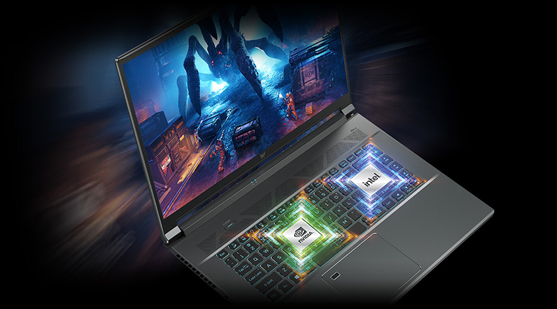

Predator Triton 500 SE – Laptop gaming đa dụng
Predator Triton 500 SE (PT516-52s) là chiếc laptop đặc biệt dành cho công việc và chơi game khi được trang bị bên trong bộ xử lý Intel Core i9 thế hệ thứ 12, GPU NVIDIA GeForce RTX 3080 Ti cùng bộ nhớ RAM LPDDR5 32 GB tốc độ 5200 MHz mang lại hiệu suất cực cao có thể dễ dàng cân các tựa game mới nhất trên thị trường. Máy có thiết kế theo phong cách Spartan hoàn toàn bằng kim loại cho phép người dùng dễ dàng sử dụng ở nhiều môi trường khác nhau như nơi làm việc hay giảng đường.
Predator Triton 500 SE gây ấn tượng với độ mỏng chỉ 19,9 mm ở điểm mỏng nhất. Nhờ thiết kế di động, mẫu laptop này có thể cùng người dùng đi đến bất cứ đâu. Máy được trang bị bộ nhớ SSD PCle Gen4 tốc độ cao đến 2 TB mang lại nhiều không gian lưu trữ trò chơi và tệp.
Predator Helios 300 – Đánh mạnh vào hiệu năng khủng

Predator Helios 300 (PH315-55) là chiếc laptop gaming mạnh mẽ được trang bị một loạt các phần cứng hàng đầu: Bộ xử lý Intel Core i7 thế hệ thứ 12, hai tùy chọn card đồ họa rời NVIDIA GeForce RTX 3080 hoặc RTX 3070 Ti, RAM 32GB DDR5 4800 MHz và SSD PCIe Gen4 RAID0 dung lượng lên đến 2TB.
Sản phẩm có màn hình IPS 15,6 inch QHD (2560 x 1440) với tần số quét lên đến 165 Hz. Ngoài ra, khung máy được cải tiến khi gọn gàng hơn giúp tăng tính thẩm mỹ cho thiết bị.
Đi cùng với phần cứng vượt trội là hệ thống quạt kép gồm một quạt AeroBlade 3D thế hệ thứ 5 giúp giữ cho nhiệt độ máy ở mức tốt, hỗ trợ kèm theo đó là mỡ tản nhiệt kim loại lỏng và công nghệ Acer’s CoolBoost.
PredatorSense tích hợp sẵn trên máy cho phép người dùng kiểm soát tốc độ quạt thông qua bốn chế độ hoạt động, trong khi tùy chọn Turbo tích hợp có chức năng tối đa hóa tức thì các cài đặt này để cải thiện hiệu suất chơi game. Ngoài ra, nhằm nâng cao trải nghiệm người dùng, Acer còn trang bị bàn phím có đèn nền LED mini RGB cho mỗi phím trên Predator Helios 300.
Sản phẩm được cài sẵn Windwos 11, sở hữu kết nối Killer DoubleShot Pro (E2600 + 1675i) và WiFi 6E cùng đa dạng cổng kết nối, gồm HDMI 2.1 kết nối với màn hình rời, cổng Thunderbolt Type-C và 2 cổng USB 3.2 Gen2. Bên cạnh tùy chọn 15,6 inch, Predator Helios 300 còn có thêm phiên bản cỡ lớn 17,3 inch (PH317-56) với tấm nền IPS QHD 165Hz hoặc FHD 165Hz / 144Hz tùy thuộc vào nhu cầu của người dùng.